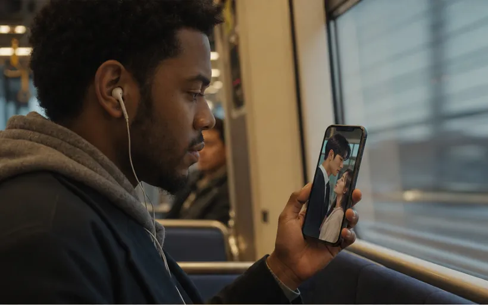
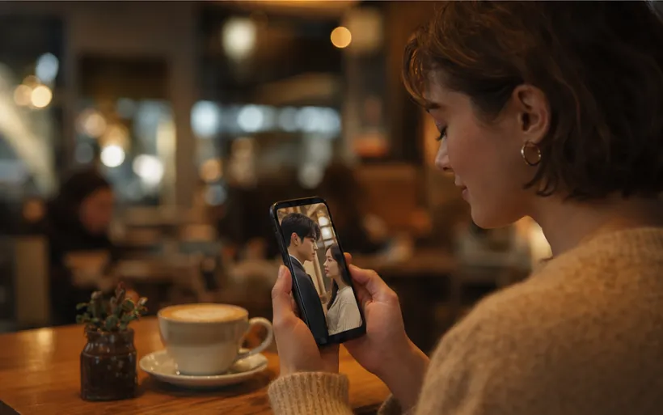

어떻게 만들었나
01
설치 없이, 텔레그램 안에서 바로
대부분의 숏드라마 앱은 설치와 가입을 거쳐야 첫 회를 볼 수 있습니다. 이 플랫폼은 텔레그램을 열고 봇이나 미니앱에 들어가면 바로 시청이 시작됩니다.
계정 확인은 봇이 텔레그램 안에서 처리하고, 웹 로그인 팝업이나 전화번호 권한 요청 같은 추가 화면은 없습니다.

02
세로 화면에 맞춘 홈
홈 화면은 지금 추천하는 작품을 크게 보여 주고, 그 아래에 이어보기 목록을 둡니다. 보던 작품은 다음 회차부터 바로 이어집니다.
작품 목록은 인기, 최신, 평점 순으로 바꿔 보고 장르별로 둘러봅니다. 모든 화면이 한 손으로 넘기기 좋게 세로로 설계되어 있습니다.
03
보면서 반응하는 재생 화면
재생 화면은 세로 전체 화면으로 열리고, 오른쪽에 좋아요, 댓글, 공유, 저장, 회차 버튼이 모여 있습니다. 화면 아래에서는 작품 소개와 진행 막대, 댓글 입력이 이어집니다.
회차 목록에서 원하는 화로 바로 넘어가고, 다 본 뒤에는 다음 회차로 이어집니다.
04
출시를 준비하는 사이트와 봇
서비스 소개 웹사이트를 한국어, 영어, 베트남어로 만들고, 공식 텔레그램 봇으로 초기 시청자 사전 등록을 받는 흐름을 개발했습니다. 등록한 시청자는 공식 채널에서 베타 소식을 받습니다.
콘텐츠는 라이선스 작품과 오리지널 작품으로 카탈로그를 꾸리고, 신고가 들어오면 확인 후 내리는 절차를 둡니다.
